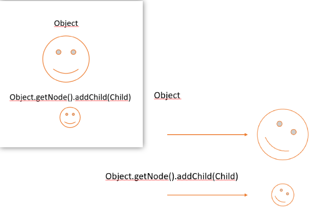

The hierarchy is a way to relate objects to each other and make them inherit a parent's raw movement and help with quick searching objects and grouping them.
Here is an example of how the relation works:

All three basic translation functions are transmitted from parent to child, horizontal and vertical movement, rotation and scaling.
Moving a child will not affect a parent's tranform functions, as they are relative to the parent and not dependant. Once a child moves, it's position changes relatively from the parent. These behaviour can be stopped by setting the parameter Node.connected to false.
java
Object obj = CreateObject("Sidekick", new Vec2(0, 0), 0, new Vec2(0, 0));
obj.node.setConnected(false);
An object is represented as a node, supreme parents are objects without a parent, they are directely inserted in the hierarchy. When instantiating an object a node of it will automatically be created as supreme parent, and children can be added to it using the funcion Node.addChildren to directly append a node to it, or the function Hierarchy.AddChildNodeTo to find an object and append a node to it.
Direct changes to a parent's transform using Transform.setPosition, Transform.setScale and Transform.setAngle will not change the object's children.
To disconnect or reconnect nodes, you may use the function Node.setConnected.
All objects should implement the "Standard Behaviour" interface, that imterface defines all the object's methods that should be common to all game objects, namely:
* Start
* Update
* DrawGUI
* ReceiveMessage
* GetBehaviour
All functions but GetBehaviour can be programmed to fit the developer's needs, dependent on the situation.
Start will be called after the object is instantiated;
Update will be called once every time the object is rendered, it receives the _delta_ argument, also known as delta time, is the time inbetween frames calculated on every update tick;
DrawGUI will also be called when the object is rendered, it must be used to draw graphics on the screen freelly with the java.awt library, it receives a Graphics2D object.
ReceiveMessage is called once a certain object is targeted as a message receiver, it receives a message
edited: Sagiri on 20/10/2022
edited: Sagiri on 22/10/2022